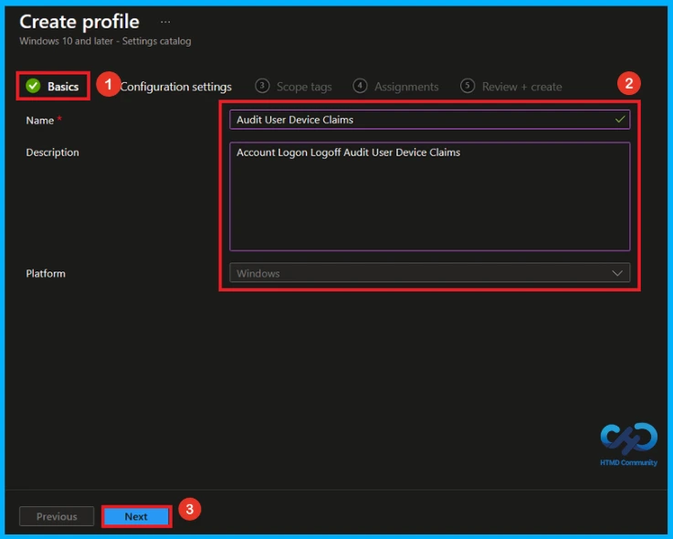
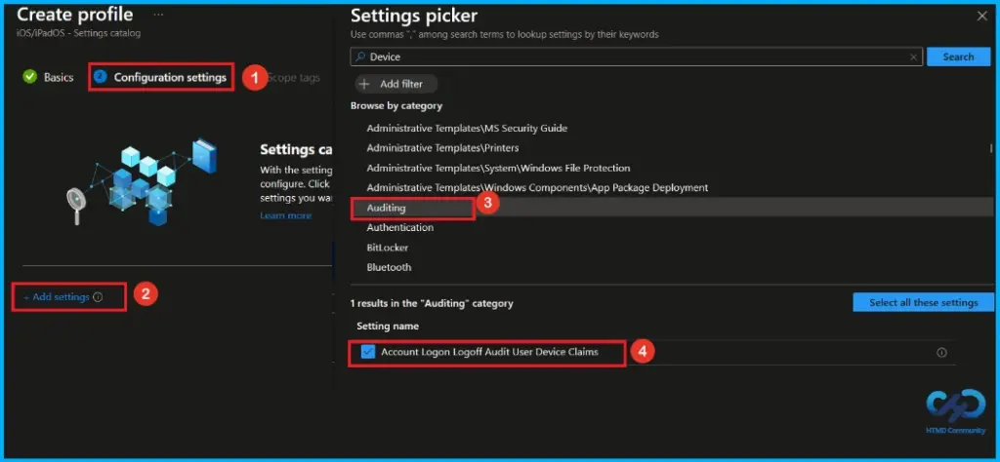
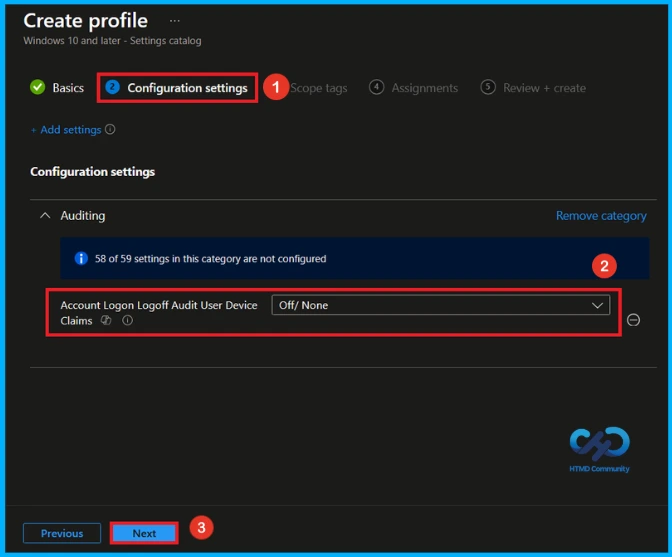
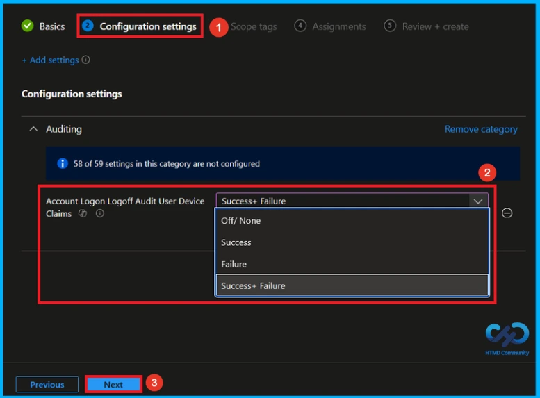
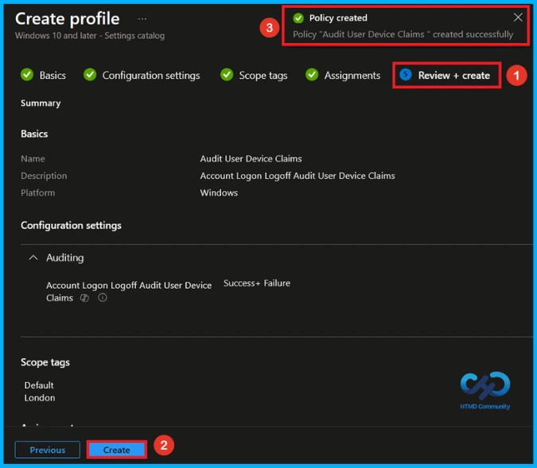
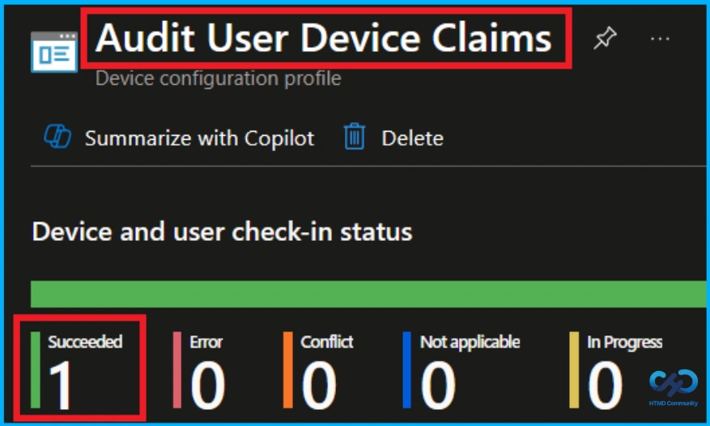
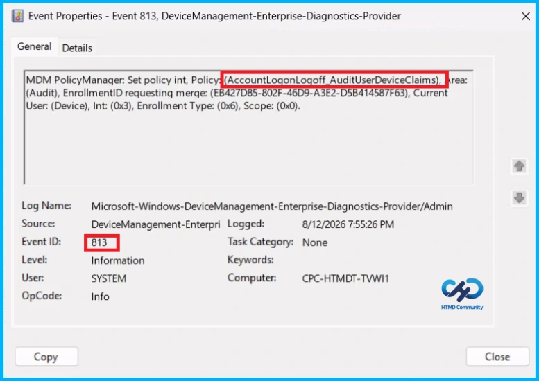
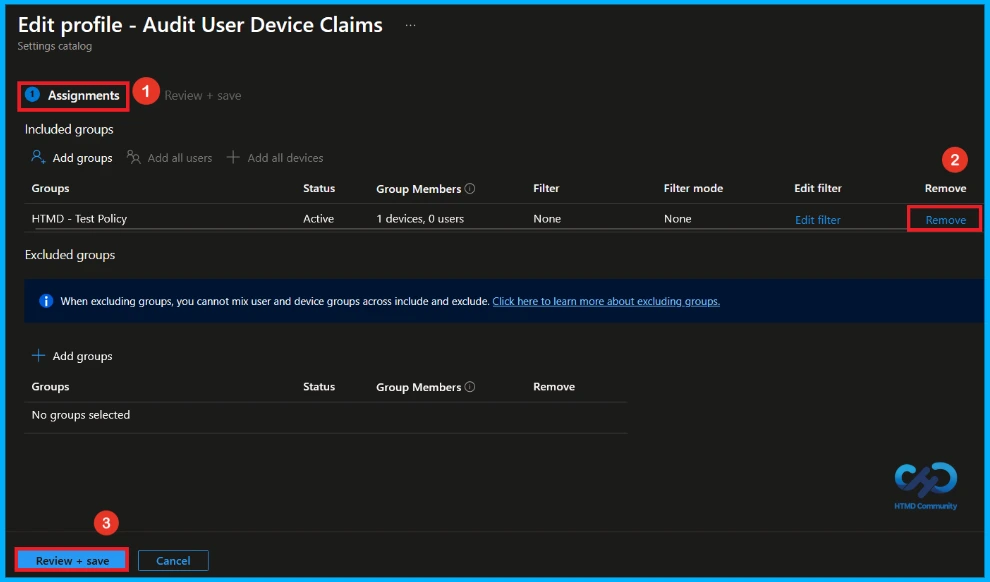
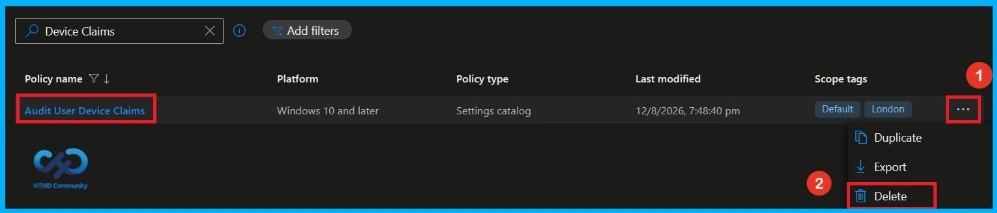

Key Takeaways
- This policy monitors user and device claims included in the logon token.
- It creates security audit events when a user successfully logs on.
- The Audit Logon setting must be enabled for this policy to work.
- Multiple events may be created when the claims information is too large for one event.
Hey, let’s discuss about how Audit and Record User and Device Claims Information in Windows Logon Tokens using Intune Policy. This policy allows administrators to audit user and device claims information included in the user’s logon token. The audit events are generated on the computer where the logon session is created. For interactive logons, the event is recorded on the computer the user logs on to, while network logons generate the event on the computer hosting the requested resource.
Table of Contents
Audit and Record User and Device Claims Information in Windows Logon Tokens using Intune Policy
User claims are added to the logon token from the user’s Active Directory account attributes, while device claims come from the computer account attributes. When enabled, this policy generates one or more security audit events for each successful logon. The Audit Logon setting under Advanced Audit Policy Configuration > System Audit Policies > Logon/Logoff must also be enabled.
How to Create a Policy
To create a policy, the first step that you must do is to sign in to the Microsoft Intune Admin Centre. After clicking on the Device on the left side of the screen, select Configuration and then click Create and select New Policy.

Create a Profile
The next step in creating the disable editing quick settings policy is to create a profile. Select Windows 10 and later as the platform and choose Settings catalog as the profile type. After selecting these options, click Create to continue.

Basic Tab of Audit User Device Claims
Enter a name for the policy. You can also add a short description to explain what the policy does. Here, Audit User Device Claims as the policy name and Account Logon Logoff Audit user Device Claims as the description. When you are done, click Next to continue.

Configure Account Logon Logoff Audit user Device Claims Policy
On the Configuration settings page, click Add settings. In the Settings picker, search device or select the Auditing category and select Account Logon Logoff Audit user Device Claims policy. After selecting the setting, add it to the profile.

Disable Account Logon Logoff Audit user Device Claims Policy
After selecting the Account Logon Logoff Audit user Device Claims policy, you can that on the Configuration settings section, the Account Logon Logoff Audit user Device Claims option under Auditing is set to off/none. Click Next to continue.

Enable Account Logon Logoff Audit user Device Claims Policy
Auditing settings, where Account Logon/Logoff Audit User Device Claims can be set to Off/None, Success, Failure, or Success + Failure. Here, Success + Failure is selected to record both successful and failed attempts. Click Next to continue.

What is Scope Tag
A scope tag in Intune is used to control visibility and access to Intune resources based on administrative roles. Scope tags are not mandatory. You can add the scope tag using the select scope tags button. Here, i select Landon as scope tag. Click Next to continue.

Assignment Tab of Account Logon Logoff Audit user Device Claims Policy
The assignments section is used to choose the users or devices that will receive the policy. Add a group by clicking on the Add group button. Here, I selected the HTMD-Test Policy group. Click Next to proceed with the policy deployment.

Final Step of Account Logon Logoff Audit user Device Claims Policy Creation
Before creating the Account Logon Logoff Audit user Device Claims policy, review all configured settings to ensure they match all the requirements. If any changes are needed, use the previous option to make changes. after verify everything, click create to deploy the policy. Then, you can see a success message.

Device and User Check-in Status
After deploying the policy, open the assigned configuration profile in the Intune admin center and search for Account Logon Logoff Audit user Device Claims Policy. Check the device and user check-in status. A Succeeded status confirms that the policy has been successfully applied to the targeted devices.

Client Side Verification
To confirm that the policy has been successfully applied on a client device. Open Event Viewer and navigate to Applications and Services Logs > Microsoft >Windows >Device Management Enterprise Diagnostic Provider > Admin. From the list of policies, use the Filter Current Log option and search for Intune event 813.
MDM PolicyManager: Set policy int, Policy: (AccountLogonLogoff AuditUserDeviceClaims),Area:
(Audit), EnrollmentID requesting merge: (EB427D85-802F-46D9-A3E2-D5B414587F63), Current
User: (Device), Int: (0x3), Enrollment Type: (0x6), Scope: (0x0).

How to Remove Assigned Group from Account Logon Logoff Audit user Device Claims Policy
To remove an assigned group from a policy, Open the Account Logon Logoff Audit user Device Claims policy from the Configuration tab and click on the Edit button on the Assignment tab. Click on Remove button on this section to remove the policy and click Review + Save after making the change.
Detailed information, you can refer to our previous post – Learn How to Delete or Remove App Assignment from Intune using by Step-by-Step Guide.

How to Delete Account Logon Logoff Audit user Device Claims Policy
If you want to delete Account Logon Logoff Audit user Device Claims policy for any reason. First, search for the Account Logon Logoff Audit user Device Claims policy in the configuration section. When you find the policy name, click on the 3-dot menu next to it and tap the Delete option.
Detailed information, you can refer to our previous post – Learn How to Delete or Remove App Assignment from Intune using by Step-by-Step Guide.

Need Further Assistance or Have Technical Questions?
Join the LinkedIn Page and Telegram group to get the latest step-by-step guides and news updates. Join our Meetup Page to participate in User group meetings. Also, join the WhatsApp Community and the Whatsapp channel to get the latest news on Microsoft Technologies. We are there on Reddit as well.
Author
Anoop C Nair is Workplace Technology solution architect with 25+ years of experience in global enterprise organizations such as JP Morgan, Capgemini, etc. He is Microsoft Certified Trainer. Microsoft MVP from 2015 onwards for consecutive 11 years! He also conducts Intune and modern workplace tech training for enterprise organizations. He is Blogger, Speaker, and Founder of HTMD Community and HTMD Conference. His focus is on Device Management technologies such as Intune, Windows, Cloud PC. He writes about technologies like Intune, SCCM, Windows, Cloud PC, Windows, Entra, Microsoft Security.